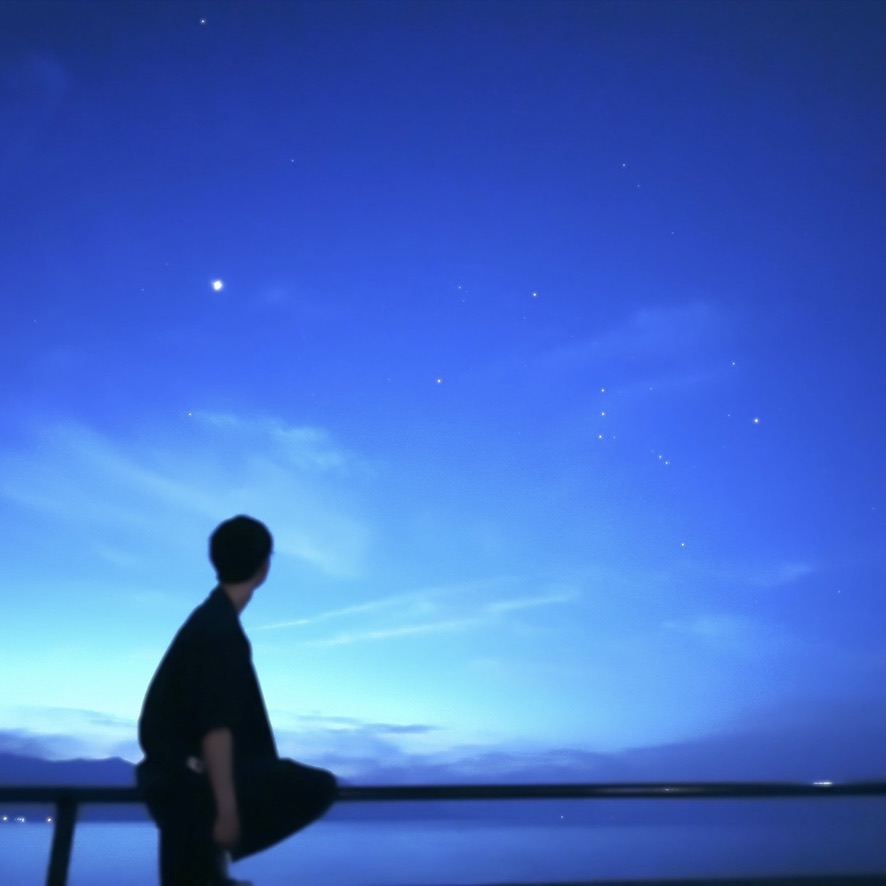

Profile
尾沢 昂輝
Koki Ozawa
山形大学大学院 有機材料システム研究科 有機材料システム専攻
松井研究室 ／ 博士後期課程 2年 / 日本学術振興会 特別研究員 (DC1)
松井研究室 ／ 博士後期課程 2年 / 日本学術振興会 特別研究員 (DC1)
化学分野でプログラミングを用いて研究をすることが好き。 コロナウイルスの流行で自粛生活が続く中、スキルアップを目的にPythonの学習を独学で始めた。 これをきっかけにマテリアルズ・インフォマティクスに興味をもち、現在の研究室に所属を希望した。研究以外では、たまに機械学習コンペティションに参加することがあり、今までに2回メダルを取得した経験がある。
✦学位 Degrees
2025.3
修士 (工学)（山形大学）
2023.3
学士 (工学)（山形大学）
✦学歴 Education
2025.4 – 現在
山形大学 大学院 有機材料システム研究科 有機材料システム専攻 (博士後期課程)
2023.4 – 2025.3
山形大学 大学院 有機材料システム研究科 有機材料システム専攻 (博士前期課程)
2019.4 – 2023.3
山形大学 工学部 システム創成工学科
✦経歴 Career
2025.4 – 現在
日本学術振興会 特別研究員 (DC1)
✦受賞 Awards
2026.5.18
第27回（2026年春季）応用物理学会 Poster Award, 応用物理学会
ポスター総講演947件の中から20件選出
2025.3.20
山形大学 優秀学生賞
研究科100人程度の中から3名選出
2023.3.21
山形大学 優秀学生賞
学科50人程度の中から1名選出
✦所属学会 Societies
2023.9 – 2025.12
日本コンピュータ化学会 学生会員
2022.6 – 現在
応用物理学会 院生会員
✦TA Teaching Assistant
2024.10 – 2025.2
物理化学演習Ⅱ TA
2024.10 – 2025.2
物理化学Ⅱ TA
2023.10 – 2024.2
物理化学演習Ⅱ TA
© 2024-2026 Koki Ozawa